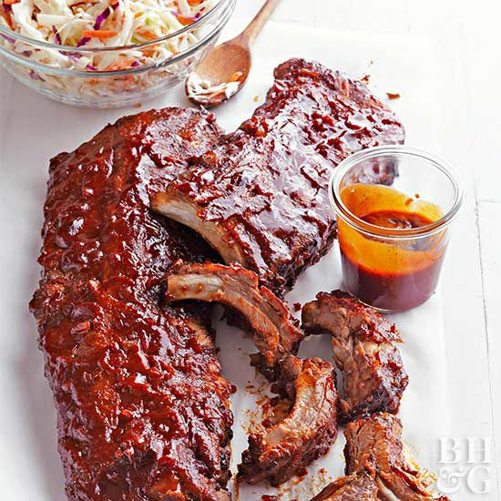

Geeks Famous Ribs
This is without a doubt one of my favorite dishes to cook, Its extremely easy
to make too! People often wonder why I boil my ribs before i bake them. This method is called parboiling
it allows all the fat and connective tissue to render down leaving you with tender delectible meat. This
recipe is extremely important to me and i am very proud of it, your friends and family will love it.

Ingredients
- 1 slab pork ribs with bone
- 4 tbsp of garlic powder
- 1 large onion
- 4 tsp salt
- 1 tbsp black pepper
- 3 cloves garlic
- 2 tsp onion powder
- 12-16 oz of BBQ sauce
- 2 tsp brown sugar
Steps
- Crack open your package of ribs and cut the slab in half. fill a large pot
add your vegetables and a quarter of your spices to the pot and bring to a boil
turn your heat down and continue boiling for 55 mins.
Note!
Be sure to flip the ribs over after about 25 mins of parboiling
- After the parboiling we are going to slap them on a baking sheet so preheat the oven
to 325 degrees. Re season the ribs while that is preheating, add a couple tablespoons of
the water from the pot so the ribs stay moist
- Now make them for 30 mins and flip doing the same on the back side
- This is the best part! Add your bbq sauce to the back side of the ribs and broil on high for 7-10
minutes, or until its nice and sticky. Flip and do the same to the topside of the Ribs
- Thats it! cut the slabs up into servings and watch everyone rave about how amazing this simple recipe is